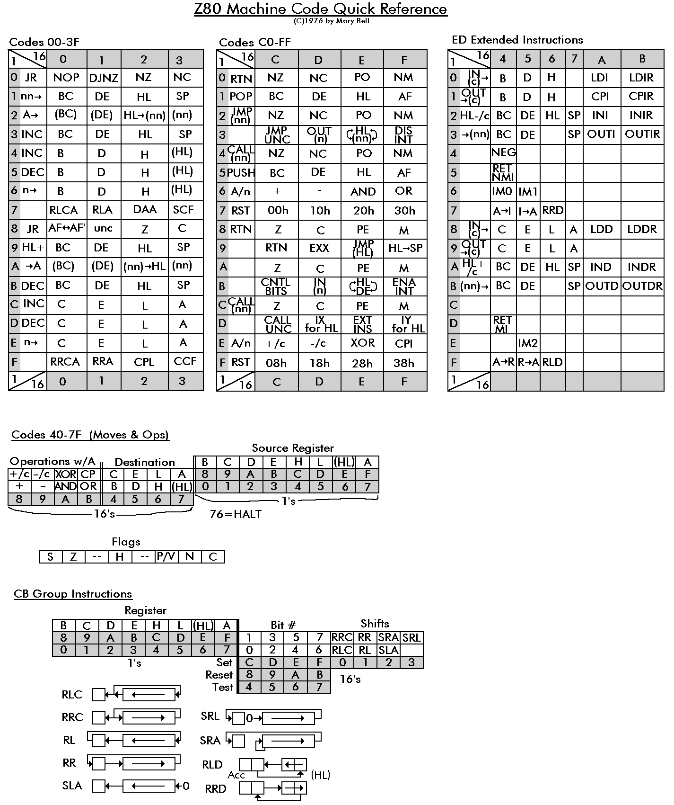

Guide Z80 - Tables d'instructions
(C)1976 by Mary Bell
Ce guide regroupe les instructions machine et assembleur du processeur Z80 sous forme de tableaux synthétiques. Il est conçu pour faciliter la lecture, la programmation et le décodage des instructions. Vous pouvez imprimer cette page ou l'utiliser comme référence interactive.
Jumps & INCs 00 to 3F
| 1's | 16's> | 0 | 1 | 2 | 3 |
| 0 | JR | NOP | DJNZ | NZ | NC |
| 1 | nn-> | BC | DE | HL | SP |
| 2 | A-> | (BC) | (DE) | (HL) | (nn) |
| 3 | INC | BC | DE | HL | SP |
| 4 | INC | B | D | H | (HL) |
| 5 | DEC | B | D | H | (HL) |
| 6 | n-> | B | D | H | (HL) |
| 7 | | RLCA | RLA | DAA | SCF |
| 8 | JR | AF<->AF' | UNC | Z | C |
| 9 | HL+ | BC | DE | HL | SP |
| A | ->A | (BC) | (DE) | (nn)->(HL) | (nn) |
| B | DEC | BC | DE | HL | SP |
| C | INC | C | E | L | A |
| D | DEC | C | E | L | A |
| E | n-> | C | E | L | A |
| F | | RRCA | RRA | CPL | CCF |
| 1's | 16's> | 0 | 1 | 2 | 3 |
Call & Pushes C0 to FF
| 1's | 16's> | C | D | E | F |
| 0 | RTN | NZ | NC | PO | NM |
| 1 | POP | BC | DE | HL | AF |
| 2 | JMP (nn) | NZ | NC | PO | NM |
| 3 | | JMP (nn) | OUT (n) | HL<->(SP) | DIS INT |
| 4 | CALL (nn) | NZ | NC | PO | NM |
| 5 | PUSH | BC | DE | HL | AF |
| 6 | A/n | + | - | AND | OR |
| 7 | RST | 00h | 10h | 20h | 30h |
| 8 | RTN | Z | C | PE | M |
| 9 | | RTN | EXX | JMP (HL) | HL->SP |
| A | JMP (nn) | Z | C | PE | M |
| B | | CNTL BITS | IN (n) | HL<->DE | ENA INT |
| C | CALL (nn) | Z | C | PE | M |
| D | | CALL (nn) | IX for HL | Ext Ins | IY for HL |
| E | A/n | +/cy | -/cy | XOR | CP |
| F | RST | 08h | 18h | 28h | 38h |
| 1's | 16's> | C | D | E | F |
Extended Instructions ED+n
| 1's | 16's> | 4 | 5 | 6 | 7 | A | B |
| 0 | IN(c) | B | D | H | | LDI | LDIR |
| 1 | OUT(c) | B | D | H | | CPI | CPIR |
| 2 | HL-/cy | BC | DE | HL | SP | INI | INIR |
| 3 | ->(nn) | BC | DE | | SP | OUTI | OUTIR |
| 4 | | NEG | | | | | |
| 5 | | RET NMI | | | | | |
| 6 | | IM0 | IM2 | | | | |
| 7 | | A->I | I->A | RRD | | | |
| 8 | IN(c) | C | E | L | A | LDD | LDDR |
| 9 | OUT(c) | C | E | L | A | CPD | CPDR |
| A | HL+/cy | BC | DE | HL | SP | IND | INDR |
| B | (nn)-> | BC | DE | HL | SP | OUTD | OUTDR |
| C | | | | | | | |
| D | | RET MI | | | | | |
| E | | | IM2 | | | | |
| F | | A->R | R->A | RLD | | | |
| 1's | 16's> | 4 | 5 | 6 | 7 | A | B |
Register Ops 40 to 7F
|
source reg |
|
|
operations w/A |
|
B | C | D | E | H | L | (HL) | A | |
|
+/cy | -/cy | XOR | CP |
C | E | L | A |
8 | 9 | A | B | C | D | E | F | <1's |
|
+ | - | AND | OR |
B | D | H | (HL) |
0 | 1 | 2 | 3 | 4 | 5 | 6 | 7 | <1's |
| 16's> |
8 | 9 | A | B |
4 | 5 | 6 | 7 |
|
| Ex: 9A=SBC A,D |
move destination |
Note: 76=HALT |
Control Bits CB+ 00–FF
|
Source Reg |
Ex: CB 5A = TEST BIT 3,D |
|
B | C | D | E | H | L | (HL) | A |
BIT# |
|
| 1's> |
8 | 9 | A | B | C | D | E | F |
1 | 3 | 5 | 7 |
RRC | RR | SRA | SRL | <ops |
| 1's> |
0 | 1 | 2 | 3 | 4 | 5 | 6 | 7 |
0 | 2 | 4 | 6 |
RLC | RL | SLA | | <ops |
| 16's> |
|
SET> |
C | D | E | F |
0 | 1 | 2 | 3 | <16's |
| 16's> |
|
RESET> |
8 | 9 | A | B |
|
<16's |
| 16's> |
|
TEST> |
4 | 5 | 6 | 7 |
|
<16's |
Graphics Version
You might want to print this out full page and then cut it apart and paste to 3 by 5 cards for a home-made handy reference.

📌 Pour une utilisation optimale, imprimez cette page en format paysage et conservez-la comme aide-mémoire.